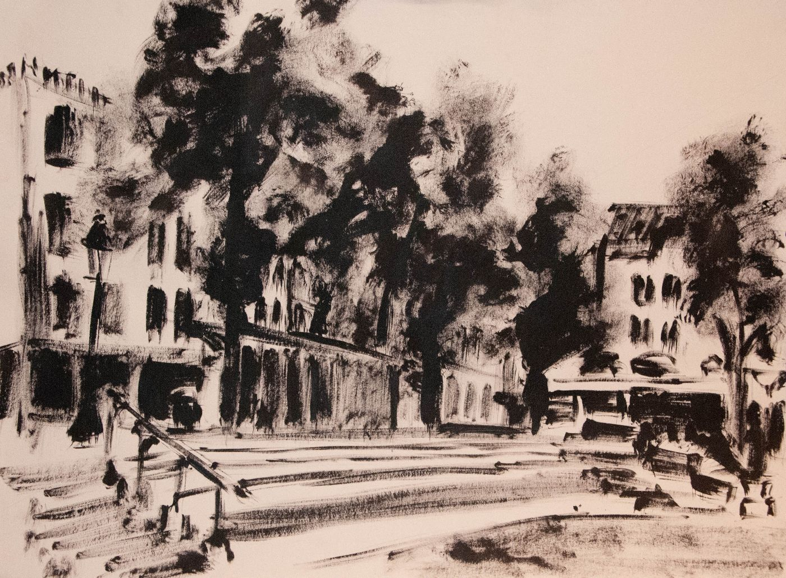
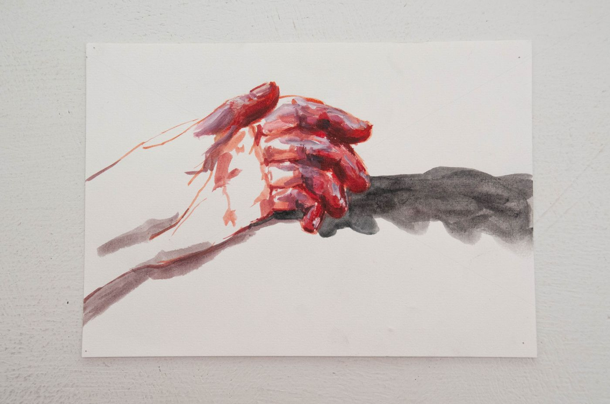

First year at Luca School of Arts, the focus on technique immediately disappeared. In 'Illustration/ Drawing & Graphics', the field of study Emma chose, the attention went to lots of sketching and observing.

View on the Steenstraat in Bruges. Ink on paper.

One of the drawings for the assignment 'Hands'. Gouache on paper